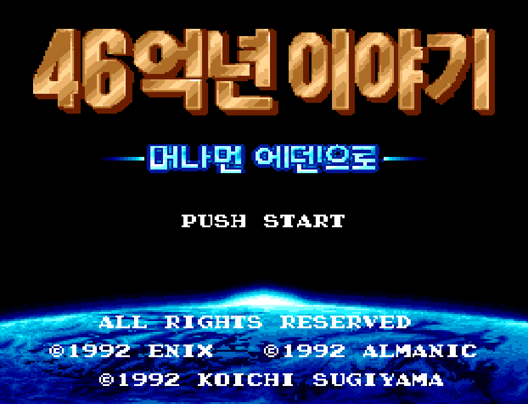

46억년 이야기 — 멀고 먼 에덴으로
46億年物語 はるかなるエデンへ
태초의 지구, 당신은 이 땅에 나타난 최초의 생명체 중 하나입니다. 평화 협정 따위 없던 약육강식의 시대에 턱과 이빨로 싸우며 살아남아야 합니다. ‘멀티 체인지’로 몸의 여러 부위를 바꾸고 ‘생명의 책’에 직접 만든 생물을 최대 50종까지 기록할 수 있습니다. 전설 속 에덴에 이르는 길에는 46억 년에 걸쳐 등장한 대자연의 강적들이 기다립니다.
이 한글패치는 일본판의 대사·메뉴·지역명·타이틀과 시대 제목을 한국어로 표시합니다. v0.81에서는 엔딩 크레딧의 빈칸에 ‘된’이 나타나던 문제를 고쳤습니다.
헤더 없는 미수정 일본판 46 Okunen Monogatari - Harukanaru Eden e (Japan).sfc에 적용하는 검수용 패치입니다. v0.8 패치본에 덧씌우지 마세요. 지원 원본의 해시와 적용 방법은 배포 ZIP 안의 README.txt에 있습니다. 전체 플레이와 실기 검증은 아직 완료되지 않았습니다.
